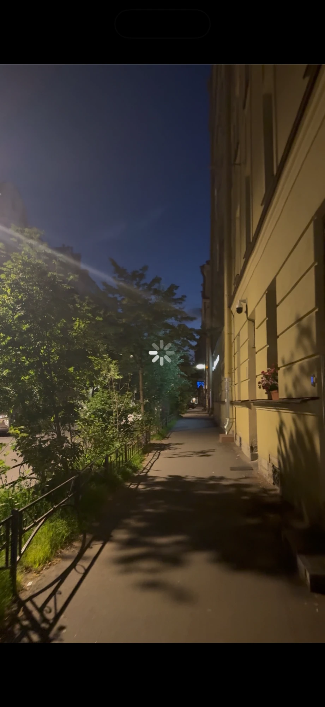
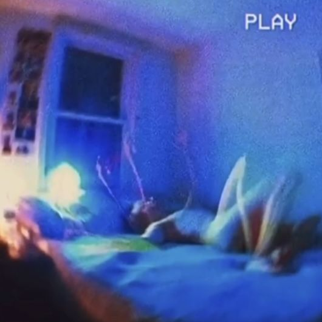
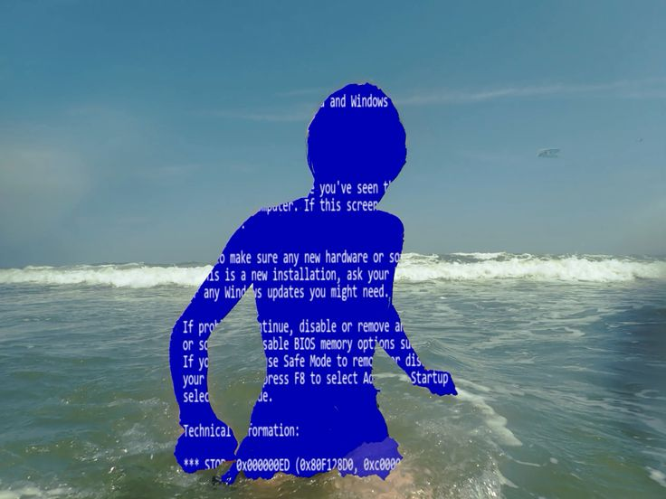
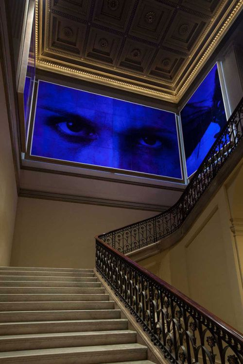

1 · the street: dusk sky, lit ochre wall, trees

2 · the VHS room: blue wall, blue sheet, one glow

3 · blue screen at the beach: the pure blue, sea, foam

4 · the eyes: electric blue on old wood and stone

5 · the kitchen: city lights, mint fridge, pale shelf